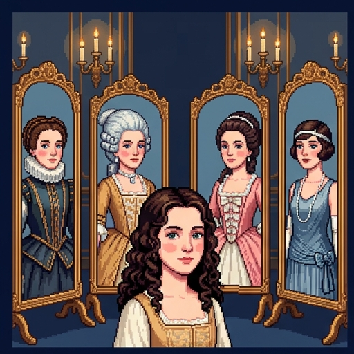
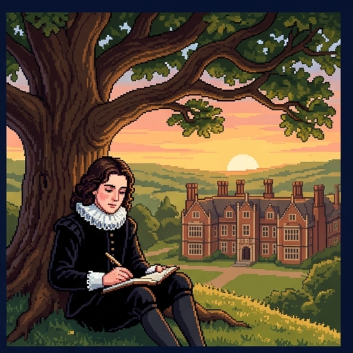
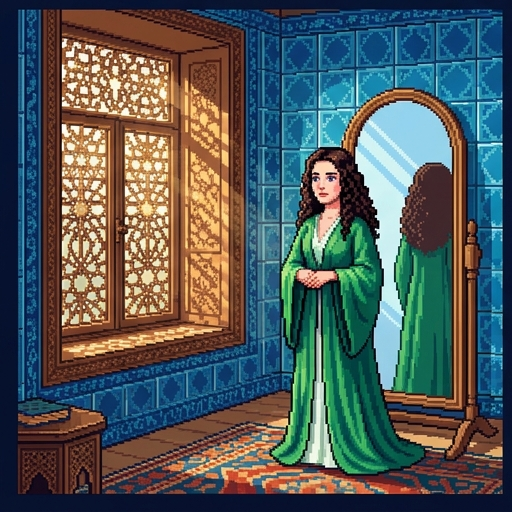
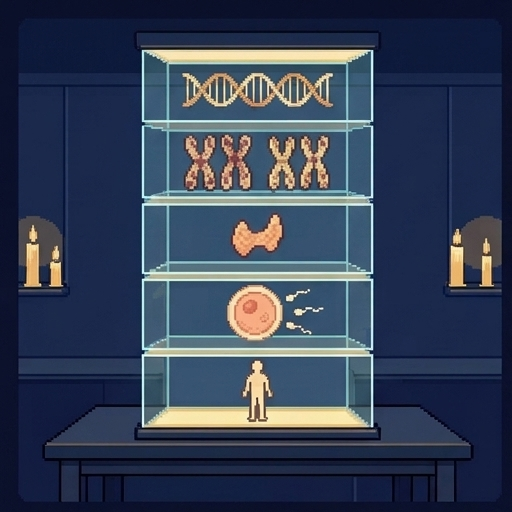
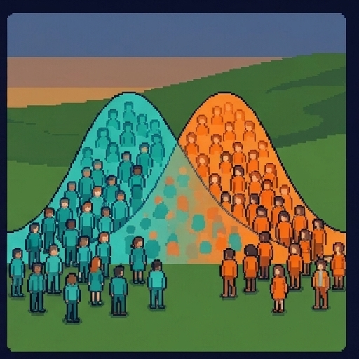
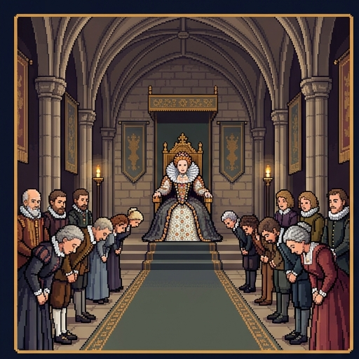
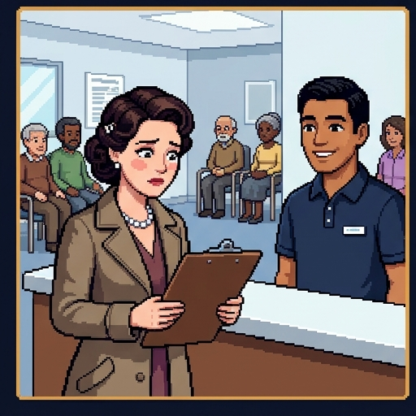
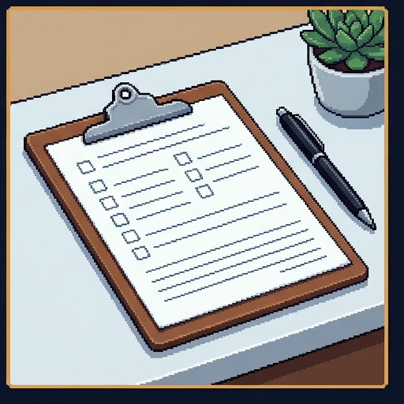
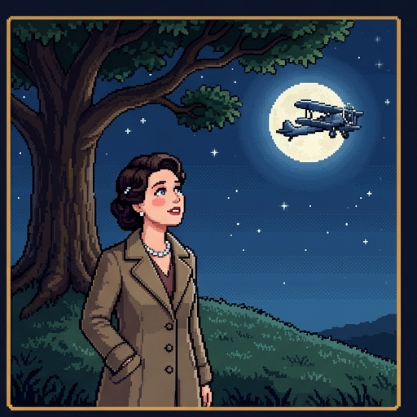

Orlando's Wardrobe
One person, more than three hundred years, and a great many clothes. What makes someone a woman or a man?
In Virginia Woolf's novel Orlando, a young nobleman lives for hundreds of years, and one morning wakes up a woman. Orlando's story is your way into one of the basic questions of bioethics.
Use → (or Next) to advance and reveal points. F = fullscreen.
Welcome to Orlando's Wardrobe. One person, more than three hundred years, and a great many clothes. What makes someone a woman or a man? In Virginia Woolf's novel Orlando, a young nobleman lives for hundreds of years, and one morning wakes up a woman. Orlando's story is your way into one of the basic questions of bioethics. Whenever it's your turn, I'll stop and wait for you.
Where You Stand Now
Rate each statement. There are no right answers, and you'll rate them again at the end.
Whether someone is a woman or a man is settled by their body.
Most differences between men's and women's roles come from society, not biology.
People are the best judges of their own gender.
A hospital form needs only one box for sex.
Science has settled exactly what sex is.
Here's where you stand now. Rate each of these five statements by how much you agree. There are no right answers, and you'll rate them again at the end. When you've rated all five, press Submit.
Saved. You'll come back to these at the end.

Meet Orlando
First, meet Orlando.
- Virginia Woolf published Orlando: A Biography in 1928. It's a comic novel, written as if it were a stuffy biography.
- Orlando is a sixteen-year-old nobleman when Queen Elizabeth I comes to visit, and is still alive in 1928, aged only thirty-six.
- Over the centuries, Orlando is a courtier, an ambassador, a poet, and a wife.
- Woolf modeled Orlando on her friend, the writer Vita Sackville-West.

One Morning in Constantinople
Orlando, now an ambassador in Constantinople, falls into a sleep that lasts seven days, and wakes up a woman. Woolf's narrator reports:
“Orlando had become a woman—there is no denying it. But in every other respect, Orlando remained precisely as he had been. The change of sex, though it altered their future, did nothing whatever to alter their identity.”
Same person, different body. So what, exactly, makes Orlando a woman now?
One morning in Constantinople. Orlando, now an ambassador in Constantinople, falls into a sleep that lasts seven days, and wakes up a woman. Woolf's narrator reports: Orlando had become a woman. There is no denying it. But in every other respect, Orlando remained precisely as he had been. The change of sex, though it altered their future, did nothing whatever to alter their identity. Same person, different body. So what, exactly, makes Orlando a woman now?
Decision Point: When?
The morning her body changed.
When the world began treating her as a woman.
When she came to see herself as a woman.
It depends on who is asking, and why.
A first decision point. When did Orlando become a woman? This one isn't graded. Pick the answer closest to your view, and read its note.
Each answer matches one of the views in this lesson. You'll answer again at the end.
Two Words: Sex and Gender
To answer, you need two words: sex and gender.
- Sex usually means biological features: chromosomes, reproductive organs, hormones, and the like.
- Gender usually means the roles, rules, expectations, and identities a society links to being a man or a woman.
- The psychologist John Money coined the term “gender role” in 1955. The sociologist Ann Oakley brought the distinction into feminism in 1972.
- The distinction lets you ask which differences come from biology and which come from society.
What a woman is expected to be is made by society, not given at birth.
One is not born, but rather becomes, a woman.
“One Becomes a Woman”
Here's one of the most influential statements of the idea, from before anyone used the word gender this way. In 1949, the French philosopher Simone de Beauvoir wrote: One is not born, but rather becomes, a woman.
- Beauvoir published The Second Sex in 1949, and that is its most famous line.
- She meant that the work, manners, and limits expected of women are made by society, not handed down by biology.
- And she argued that society treats woman as “the Other”: defined by her relation to man, while man counts as the standard.

Sex Has Layers
Now, what exactly is biological sex? It has layers.
- Chromosomes: most people have XX or XY.
- Gonads and hormones: ovaries or testes, and the hormones they make, such as estrogen and testosterone.
- Anatomy: internal organs such as a uterus or a prostate, and the external genitals.
- Gametes: the sex cells a body is organized to make, large eggs or small sperm. For most people, all of these layers line up.
When the Layers Come Apart
But the layers don't always line up.
- In some people the layers don't all line up. Doctors call these differences (or disorders) of sex development. They are also called intersex variations.
- An example is complete androgen insensitivity. The person has XY chromosomes and internal testes, but her body can't respond to testosterone.
- She develops a female-typical outward body, without a uterus. She is usually raised as a girl, and identifies as a woman.
- All kinds together, estimates run from about 0.02% to 1.7% of people. They differ because researchers disagree about which conditions count.
One Definition of Sex, or Several?
The philosopher of biology Paul Griffiths defends biology's standard definition: “Males produce small gametes, and females produce large gametes.”
He adds that some individual organisms are neither male nor female.
The philosopher Sarah Richardson argues that how to define sex depends on the research context. She calls this sex contextualism, and she doesn't deny that sex is real.
A genetics study might sort people by chromosomes, and a drug study by hormone levels.
This is a live debate. Philosophers have the same argument about species and genes, because scientists in different fields define those differently too.
So, is there one definition of sex, or several? The philosopher of biology Paul Griffiths defends biology's standard definition: males produce small gametes, and females produce large gametes. He adds that some individual organisms are neither male nor female. The philosopher Sarah Richardson argues that how to define sex depends on the research context. She calls this sex contextualism, and she doesn't deny that sex is real. A genetics study might sort people by chromosomes, and a drug study by hormone levels. This is a live debate. Philosophers have the same argument about species and genes, because scientists in different fields define those differently too.
Try It: Orlando's Wardrobe
Now, gender. Orlando has lived through centuries of rules about who wears and does what. Here are six of them, from Orlando's time and a little after. For each card, guess who was expected to do it, then read the record. When you've turned over all six, press Continue.
Sex or Gender?
Sex: a biological feature
Gender: a social role, rule, or expectation
Having XY chromosomes
Having a uterus
Producing sperm
The expectation that boys shouldn't cry
A 1918 trade magazine's advice that pink is for boys
The expectation that mothers, not fathers, stay home with a sick child
A rule that only men may vote
Sex or gender? Using the distinction as defined in this lesson, sort each one under sex, a biological feature, or gender, a social role, rule, or expectation. When every line is placed, press Check answers.
Right. Chromosomes, organs, and gametes belong to sex. Rules about crying, colors, childcare, and voting belong to gender.
Back to That Morning
Every view in this lesson agrees that rules like those in Orlando's wardrobe come from society. They disagree about what being a woman is. Three things might settle it for Orlando:
Back to that morning. Every view in this lesson agrees that rules like those in Orlando's wardrobe come from society. They disagree about what being a woman is. Three things might settle it for Orlando.
- Her body, which changed during that seven-day sleep.
- How the world treats her. On the ship home, given skirts and a captain's courtesy, Orlando “realized with a start the penalties and the privileges of her position.”
- Her own sense of herself. Woolf's narrator suspects that “a change in Orlando herself” led her to dress as a woman.
- Each of the three views you're about to meet picks one of these.
Women are adult human females: “woman” names a biological category.
The Biological View
The first view is the biological view.
- The philosopher Alex Byrne argues that women are simply adult human females. On his view, “woman” names a biological category, not a social one.
- On this view, Orlando became a woman the morning her body changed.
- Its best case: it fits ordinary speech, and it works in every century, whatever the rules.
- It asks nothing about clothes or manners. A woman can break every rule in Orlando's wardrobe.
Questions for the Biological View
Here are two questions for the biological view.
- Which female? The philosopher Talia Mae Bettcher argues that “female” is hard to define. Byrne replies that a definition can use a word without defining it.
- Trans women. The view implies that trans women are not women. Byrne accepts this, and argues that the opposite claim can't just be assumed as a premise.
- He says the goal should be for trans women and men “to be accepted by society and live in peace and dignity.”
- The philosopher Robin Dembroff replies that Byrne assumes what he needs to prove: one fixed meaning for “woman,” and a science that sorts everyone into two genders.
Whether these consequences count against the view is hotly disputed. This lesson doesn't settle it.
A Different Claim: “Biology Is Destiny”
Don't confuse the biological view with a different claim.
- Biological determinism is the claim that a person's sex fixes their traits and their proper role in life.
- Aristotle called the female “as it were a deformed male.” Rousseau wrote that “the whole education of women ought to be relative to men.”
- That isn't Byrne's view. His claim is about what women are, not about what women can or should do.
- Treating the two claims as one misrepresents the biological view.

What the Averages Show
What does science say about differences between men and women?
- In a 2005 review, the psychologist Janet Hyde found most measured differences between men and women small or close to zero. A few were large, such as throwing speed.
- A 2009 study found a large average difference in interest in things versus people, though its size depends on how it's measured.
- Marco Del Giudice argues that combining traits shows bigger differences. Still, the groups overlap, so an average doesn't tell you what one person is like.
- Both biology and upbringing play a part, and how much each does is debated.
And a fact about averages can't, by itself, tell anyone what they should do. That takes a moral premise too, as the philosopher David Hume argued in 1740.
What Follows, and What Doesn't?
In Hyde's review, most measured differences between men and women were small or close to zero.
A trait can differ on average between two groups while the groups still overlap.
No fact about averages, by itself, settles what roles people should have.
Byrne's view says that a woman's sex fixes her proper role in life.
A difference in averages tells you what a particular woman will be like.
Average differences between men and women come from upbringing, not biology.
What follows, and what doesn't? Check every statement that is true, as this lesson presents it. Then press Check answers.
Right. Averages can differ while the groups overlap. And no fact about averages, by itself, tells anyone what they should do.
To be a woman is to be treated as subordinate because you are seen as female.
The Social View
The second view is the social view.
- The philosopher Sally Haslanger builds on Beauvoir. On her account, being a woman is a social position: being treated as subordinate because others see you as female.
- Back in England, Orlando is sued for her estates. Among the charges: that she is dead, and that she is a woman, “which amounts to much the same thing.”
- On the social view, that treatment, not the change of body by itself, makes Orlando a woman.
- Its best case: it names what women in very different societies share, and it asks what the word should do for feminism, not only how it's used.

Questions for the Social View
Here are two questions for the social view.
- The queen. Mari Mikkola asks about the Queen of England. If a queen isn't subordinated, she isn't a woman on this account. Orlando's Elizabeth I may not count either.
- Haslanger saw this coming. Such females, she says, “are not counterexamples,” because her definition aims at the category feminism needs.
- A just world. Ending injustice would end womanhood in her sense. She accepts this: feminism aims at “a day when there are no more women,” though not no more females.
- Mikkola also argues that redefining “woman” this way is philosophically unnecessary and politically unhelpful.
Your gender identity is your inner map for living in your society's gender system.
The Identity View
The third view is the identity view.
- The philosopher Katharine Jenkins argues that Haslanger's account leaves out trans women, so we need a second concept: gender identity.
- To have a female gender identity, on her account, is to have an inner map formed to guide someone treated as a woman through her world.
- Its best case: it counts how people understand themselves. On this view, Orlando is a woman once her map is a woman's.
Questions for the Identity View
Here are two questions for the identity view.
- Circularity. If a woman is anyone who identifies as a woman, what is she identifying as? The definition seems to use the word it defines. Byrne presses this objection.
- Jenkins's reply: her map is defined by Haslanger's social position, not by the identity sense of “woman,” so it doesn't go in a circle.
- The map tracks which gender norms you experience as relevant to you, not whether you like or follow them.
- Authority. Bettcher argues that others should accept a person's sincere word about their gender. Jenkins grants that, on her account, people can be wrong about it.
Which View?
Biological view
Social view
Identity view
Orlando became a woman the morning her body changed.
Whether you're a woman is settled by your body, not by how you're treated or how you see yourself.
Orlando became a woman when the world began treating her as one: on the ship home, and in the lawsuits over her estates.
A ruling queen who isn't subordinated may not count as a woman.
A person is a woman if she experiences women's norms as the ones that apply to her, whether or not she follows them.
This view was built to include trans women, whom, it argues, the social view leaves out.
Which view? Each claim comes from one of the three views. Sort each one under the biological view, the social view, or the identity view. When every line is placed, press Check answers.
Right. The biological view looks to the body, the social view to how society treats you, and the identity view to your inner map.

Orlando Goes to the Doctor
Woolf's novel ends in 1928. In this lesson's sequel, Orlando, still thirty-six, books a checkup at a present-day clinic.
Orlando goes to the doctor. Woolf's novel ends in 1928. In this lesson's sequel, Orlando, still thirty-six, books a checkup at a present-day clinic.
- The intake form asks for her date of birth. She decides to leave that one blank.
- Then it asks her sex: M or F. Orlando was born a boy, and her lawsuits ended with her sex “pronounced indisputably” female. Which does the clinic mean?
- Dr. Imani Brooks, the clinic's family doctor, says it's a fair question. Different parts of the clinic need different answers.
Why Medicine Needs Sex, Carefully
Medicine does need to know about sex. Here's why.
- In 2013 the FDA halved the recommended dose of the sleeping pill zolpidem for women. Women clear it more slowly, so more of them woke with enough left to impair driving.
- Crash-test dummies were modeled on an average man. In comparable frontal crashes, belted women have been injured more often than belted men.
- From 1977 to 1993, FDA guidance kept women who could become pregnant out of the earliest drug trials.
- Since 2016, the NIH has required the researchers it funds to consider sex as a biological variable in their studies.

Four Questions, Not One Box
Health-record standards now keep several of these facts apart, instead of one box. Orlando's clinic needs four:
Here's the fix. Health-record standards now keep several of these facts apart, instead of one box. Orlando's clinic needs four.
- Organs present: which organs a patient has, such as a cervix or a prostate. Cancer screening follows this.
- Chromosomes: XX, XY, or another pattern. The risk of passing on a condition carried on the X chromosome follows this.
- Legal sex: what the patient's ID and insurance records say. Billing and records follow this.
- Gender identity and name: how the patient understands themselves, and the name, title, and pronouns they use. Staff use these to address the patient.
Try It: The Intake Form
Now try it yourself. The clinic's old form has one box: M or F. Here are five patients and four tasks the clinic has to get right. First see what the one box gets wrong. Then fix the form, one task at a time, by choosing the question the new form should ask. When you've seen the new form, press Continue.
Which Question Does It Need?
Organs present
Chromosomes
Legal sex
Gender identity and name
Deciding whether a patient whose cervix was removed in surgery still needs Pap tests
Deciding whether to offer prostate cancer screening to a trans woman who still has a prostate
Working out how hemophilia, which is carried on the X chromosome, could pass to a patient's children
Filling in the sex an insurance claim must show to match the insurer's records
Looking up which title, “Mr.” or “Ms.,” a patient asked staff to use, when it doesn't match the sex on their ID
Looking up the name a patient goes by, when it differs from the one on their ID
Which question does it need? Each task comes up at the clinic. Sort each one under the question it needs: organs present, chromosomes, legal sex, or gender identity and name. When every line is placed, press Check answers.
Right. Screening follows organs, how hemophilia is passed on follows chromosomes, claims follow legal sex, and the title and name a patient asked for are recorded with their gender identity.
What “woman” picks out may shift with the context, the way “tall” does.
It Depends on the Context
So maybe the answer is: it depends on the context.
- Some words shift with context. A tall pony isn't a tall giraffe.
- The philosopher Jennifer Saul considers the idea that “woman” works like that: the context sets which similarities to typical females count.
- That's the same kind of move Richardson makes about sex.
- Saul's caution: contextualism doesn't say which standard a context should use. That's a moral and political question, and it's where the disagreements are.
Where the Concepts Collide
In some contexts the views give different answers, and people disagree sharply about which one should count. This lesson leaves the verdicts to you and your class.
Where the concepts collide. In some contexts, the views give different answers, and people disagree sharply about which one should count. This lesson leaves the verdicts to you and your class.
- Sports: who competes in women's events.
- Prisons and shelters: who is housed where.
- Identity documents: what a passport or birth certificate should say, and whether it can change.
- Medical care for gender-questioning young people: an area of current scientific and political debate, outside this lesson.
For each one, ask this lesson's question: which concept does this context need, and why?
Fill In the Gaps
1. Beauvoir wrote that one is not born, but rather
becomes, a woman.
2. Byrne argues that women are simply
adult human females.
3. Haslanger defines a woman by her
social position.
4. For Jenkins, a female gender identity is an inner map formed to guide someone
treated as a woman through her world.
5. Richardson argues that how to define sex depends on the
research context.
6. Saul warns that contextualism doesn't say which standard a context should use. That is a
moral and political question.
Time to check what you've learned. Fill in each gap by choosing an option, then press Check.
Right. Byrne looks to the body, Haslanger to social position, and Jenkins to an inner map. Richardson argues that defining sex depends on the context, and Saul considers the same kind of idea for woman.

Decision Point: When, Again?
The morning her body changed.
When the world began treating her as a woman.
When she came to see herself as a woman.
It depends on who is asking, and why.
One last decision point. Now that you've met the three views: when did Orlando become a woman? This one isn't graded. Pick the answer closest to your view, and read its note.
Compare this with what you picked at the start. Whichever way you've moved, the useful thing is being able to say which view your answer comes from.
Where You Stand Now
These are your ratings from the start. Rate each statement again.
These are your ratings from the start. Rate each statement again, then press Submit.
Saved. Now, a quick summary of the lesson.
Summed Up
Here's the lesson, summed up.
- Sex and gender: sex comes in biological layers, and whether it has one definition is debated. Gender is the social roles and identities linked to it.
- Three views: Byrne looks to the body, Haslanger to how society treats you, and Jenkins to your inner map. Each faces a serious objection.
- Averages aren't destiny: most differences are small, and no average, by itself, tells anyone what they should do.
- Context: medicine needs the right concept for each task. Saul's question remains: which concept should each context use?
For Further Reading
If you'd like to go further, here are some good places to start, each with a note on why it's worth your time. Thanks for playing.
- Virginia Woolf, Orlando: A Biography (1928). The novel itself: funny, short, and free online now that it is in the public domain.
- Mari Mikkola, “Feminist Perspectives on Sex and Gender,” Stanford Encyclopedia of Philosophy. A free, careful map of the whole debate, including views this lesson leaves out.
- Sally Haslanger, “Gender and Race: (What) Are They? (What) Do We Want Them To Be?” Noûs 34, no. 1 (2000): 31–55. The social view, and the case for defining a word by what it should do.
- Katharine Jenkins, “Amelioration and Inclusion: Gender Identity and the Concept of Woman,” Ethics 126, no. 2 (2016): 394–421. The identity view, built as a reply to Haslanger.
- Alex Byrne, “Are Women Adult Human Females?” Philosophical Studies 177 (2020): 3783–3803. The biological view, with replies to the main objections.
About this lesson. Brendan Shea, PhD, wrote this lesson with help from AI tools. Claude (Anthropic) helped draft the text and code and check facts, and the illustrations were made with AI image generators. The narrator's voice is synthetic (Google Gemini text-to-speech). The author reviewed everything and is responsible for any errors.